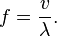

Sound
Sound is a pressure wave, like all waves it transfers energy without transferring matter. It requires a medium (A liquid, solid or gas) which means that it can not travel through a vacuum, unlike EM waves. It is a longitudinal wave, the transfer of energy is parallel to the direction of motion.
Freq
length
343m/s
comm
Above are two diagrams showing the same sound wave. You can move the green slider to change the frequency (pitch) of the wave. One shows how the wave expands from its source (it expands in a sphere, so this shows a cross section) and the other shows what it would look like on an oscilloscope. Although sound is a longitudinal wave we can still graph it in this way as it is more helpful. Think about what values you can get from the oscilloscope if it had labeled axis.
The equation above shows frequency (in Hertz, Hz) equals the velocity of the wave (in meters per second, m/s) divided by the wavelength (in metres, m. The symbol of wavelength is the lowercase lambda). Notice that for our sound wave traveling through room temperature air the waves speed will be constant, so frequency and wavelength are proportional (Thats why you can change the wavelength even though the slider changes the frequency).
For sound waves the amplitude (The maximum displacement from rest on the oscilloscope) is how loud the sound is, the larger the amplitude, the more energy so the louder it is.
The object producing the sound waves is the Russian Soyuz spacecraft that Tim Peake went to the ISS in. Here it is stationary but you'll meet it again on the next page.
Next